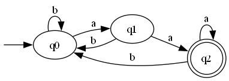
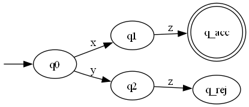
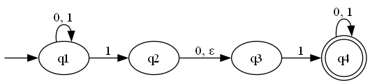

6.1. Gráf fogalma és megadásának módjai. Egyszerű, irányított és irányítatlan gráfok. Séta, út, összefüggőség. Nevezetes gráfok: páros gráf, teljes gráf, fa, kör, súlyozott gráf.
Alapfogalmak és Definíciók
Definíció: A G=(V,E) matematikai struktúrát gráfnak nevezzük, ahol:
V (Csúcsok vagy Pontok): A csúcsok nem üres halmaza.
E (Élek): Az élek halmaza. Minden él a csúcsok halmazából választott kételemű halmaz (irányítatlan gráf esetén) vagy rendezett pár (irányított gráf esetén).
Fokszám: Egy adott csúcshoz kapcsolódó élek száma.
Irányítatlan gráfban: Egy csúcs fokszáma a rá illeszkedő élek száma. Jelölése: d(v).
Az élek halmazát alkotó csúcspárok rendezetlenek. Ha van egy él A és B között, akkor a kapcsolat kölcsönös (olyan, mint egy kétirányú utca).
graph LR
H((6)) --- G((4))
G --- C((5))
G --- E((3))
E --- B((2))
C --- A((1))
E --- I((7))
C --- B
B --- D((9))
F((8)) --- D
G=(V,E), ahol V={1,2,3,4,5,6,7,8,9} E={(1,5),(2,5),(2,3),(2,9),(3,7),(3,4),(4,5),(4,6),(8,9)}
Irányított gráf
Az élek halmazát alkotó csúcspárok rendezettek. Az (A,B) él azt jelenti, hogy az él A-ból B-be mutat (olyan, mint egy egyirányú utca vagy egy internetes hivatkozás).
graph LR
H((6)) --> G((4))
G <--> C((5))
G <--> E((3))
E --> B((2))
C --> A((1))
E --> I((7))
C <--> B
B <--> D((9))
F((8)) --> D
G=(V,E), ahol V={1,2,3,4,5,6,7,8,9}, és az élek halmaza: E={(2,3),(2,5),(2,9),(3,4),(3,2),(3,7),(4,3),(4,5),(5,2),(5,4),(5,1),(6,4),(8,9),(9,2)}
Szomszédsági lista: Minden csúcshoz felsoroljuk a vele közvetlenül összekötött szomszédokat.
1→ [2, 5]
2→ [1, 3, 4, 5]
3→ [2, 4]
4→ [2, 3, 5]
5→ [1, 2, 4]
Szomszédsági mátrix: Egy n×n-es mátrix, ahol az i. sor j. oszlopában 1 szerepel, ha van él a két csúcs között, és 0, ha nincs. (Irányítatlan gráfnál a mátrix mindig szimmetrikus a főátlóra!)
Szomszédsági lista: Csak a kimenő (mutató) éleket soroljuk fel.
1→ [2, 4]
2→ [3]
3→ [2]
4→ [3]
Szomszédsági mátrix: Nem szimmetrikus, az 1→2 él csak az 1. sor 2. oszlopában ad 1-est.
Csúcs
1
2
3
4
1
0
1
0
1
2
0
0
1
0
3
0
1
0
0
4
0
0
1
0
Mikor melyiket használjuk?
Szomszédsági lista: Ritka gráfok esetén ajánlott (∣E∣≪∣V∣2). Könnyű végigmenni egy adott csúcs szomszédjain.
Szomszédsági mátrix: Sűrű gráfok esetén ajánlott (∣E∣≈∣V∣2). Azonnal ellenőrizhető, hogy vezet-e él két adott csúcs között.
Útvonalak és Összefüggőség
Útvonal fogalmak
Séta: Csúcsok és élek váltakozó sorozata. Szabadon ismétlődhet benne csúcs is és él is. (Zárt séta: a kezdő- és végpontja megegyezik).
Vonal (Egyszerű séta): Olyan séta, amelyben egyetlen él sem ismétlődik (de csúcsot érinthetünk többször is).
Út: Olyan séta, amelyben egyetlen csúcs sem ismétlődik (ezáltal él sem ismétlődhet). Ennek hossza az útban szereplő élek száma.
Kör: Zárt út. Olyan út, amelynek a kezdő- és végpontja megegyezik, de ezen kívül semelyik másik csúcsot nem érinti kétszer.
Különleges vonalak és körök (Euler-gráfok)
Euler-vonal: Olyan séta, amely a gráf minden élét pontosan egyszer érinti. (Feltétele: A gráf összefüggő, és pontosan 0 vagy 2 darab páratlan fokszámú csúcsa van).
Euler-kör: Olyan zárt séta, amely a gráf minden élét pontosan egyszer érinti (vagyis a kezdőpontba érkezik vissza). (Feltétele: A gráf összefüggő, és minden csúcsának fokszáma páros).
(Megjegyzés: A minden csúcsot pontosan egyszer érintő utat Hamilton-útnak, a zárt változatát Hamilton-körnek nevezzük).
Összefüggőség
Összefüggő gráf (Irányítatlan): Bármely két csúcsa között létezik út. Nincsenek leszakadt, izolált részek.
Irányított gráfoknál:
Gyengén összefüggő: Ha az élirányokat figyelmen kívül hagyva (irányítatlanként tekintve rá) a gráf összefüggő.
Erősen összefüggő: Ha bármelyik A csúcsból el lehet jutni az összes többi csúcsba az élek irányát követve, és ez visszafelé is igaz.
Nevezetes gráfok (Típusok és Példák)
Egyszerű gráf: Nincsenek benne hurokélek (önmagába visszatérő él) és többszörös élek (két csúcs között több azonos irányú él).
Páros gráf
A csúcshalmaz két diszjunkt halmazra (A és B) osztható fel úgy, hogy minden él kizárólag egy A-beli és egy B-beli csúcsot köt össze. Halmazon belüli élek nincsenek. (Jellemzője: nincsenek benne páratlan hosszúságú körök.)
graph LR
subgraph "A halmaz"
A1((A1))
A2((A2))
A3((A3))
end
subgraph "B halmaz"
B1((B1))
B2((B2))
end
A1 --- B1
A2 --- B2
A2 --- B1
A3 --- B2
Teljes gráf
Olyan egyszerű gráf, amelynek bármely két csúcsa között pontosan egy él van (mindenki ismeri egymást). n csúcs esetén a jelölése Kn, és éleinek száma: ∣E∣=2n(n−1)
Olyan irányítatlan gráf, amely összefüggő és körmentes. Bármely két csúcsa között pontosan egyetlen út vezet. Az élek száma mindig pontosan eggyel kevesebb a csúcsok számánál: ∣E∣=∣V∣−1.
graph TD
Gyökér((Gyökér)) --- A((A))
Gyökér --- B((B))
A --- C((C))
A --- D((D))
B --- E((E))
Körgráf
Olyan összefüggő gráf, amelyben minden csúcs fokszáma pontosan 2. Egyetlen nagy zárt láncot alkot.
graph LR
A((A)) --- B((B))
B --- C((C))
C --- D((D))
D --- E((E))
E --- A
Súlyozott gráf
Minden élhez hozzá van rendelve egy érték (súly vagy költség). Ez az algoritmusokban gyakran távolságot, időt vagy hálózati kapacitást jelöl.
graph LR
A((Budapest)) -- "230 km" --- B((Bécs))
A -- "200 km" --- C((Pozsony))
C -- "80 km" --- B
6.2. Determinisztikus és nemdeterminisztikus véges automaták, reguláris nyelvek. Környezetfüggetlen grammatikák és környezetfüggetlen nyelvek, veremautomaták.
Véges automaták (determinisztikus)
Egy determinisztikus véges automata (DFA) olyan matematikai modell, amely memóriával nem rendelkezik, csupán véges számú állapot között vált a bemenet alapján. Formálisan egy M=(Q,Σ,q0,A,δ) ötös, ahol:
Q: véges állapothalmaz (a gép lehetséges belső állapotai)
Σ: véges bemeneti ábécé (az elfogadható szimbólumok halmaza, pl. {a,b})
q0: q0∈Q⇒ kezdőállapot (innen indul a jelsorozat feldolgozása)
A: A⊆Q⇒ végállapotok, azaz az elfogadó állapotok halmaza
δ: Q×Σ→Q⇒ állapot-átmenet függvény (megmondja, hogy egy adott állapotból egy adott betű beolvasása után pontosan melyik új állapotba lép a gép)
Példa a működésre: (A lenti automata pontosan azokat a szavakat fogadja el, amelyek "aa"-ra végződnek).

M=({q0,q1,q2},{a,b},q0,{q2},δ), ahol az átmenetfüggvény (δ) az ábra alapján a következőképpen alakul:
δ(q0,a)=q1
δ(q0,b)=q0
δ(q1,a)=q2
δ(q1,b)=q0
δ(q2,a)=q2
δ(q2,b)=q0
Kiterjesztett állapotátmenet függvény (δ∗)
Míg a sima δ csak egyetlen karakter beolvasását írja le, a kiterjesztett változat (δ∗) egy teljes szó sorozatos feldolgozását mutatja meg.
Példa: δ∗(q0,abaa)=q2. Ez azt jelenti, hogy a q0 kezdőállapotból indulva, az "abaa" szót karakterenként beolvasva a gép lépésről lépésre halad (q0aq1bq0aq1aq2), és végül a q2 állapotban áll meg.
Elfogadott szó
Az M automata akkor fogad el egy adott x szót, ha a szó legutolsó betűjének feldolgozása után a gép egy elfogadó állapotban áll meg.
Formálisan: M elfogadja x-et, ha δ∗(q0,x)∈A.
Elfogadott nyelv
Az automata által elfogadott nyelv (jelölése L(M)) nem más, mint az összes olyan szó halmaza, amelyre a fenti feltétel igaz. L(M)={x∈Σ∗∣δ∗(q0,x)∈A}
Szavak megkülönböztetése
Definíció: x és y szavak megkülönböztethetőek egy L nyelvre nézve, ha létezik olyan z szó, hogy:
xz∈L és yz∈/L
VAGYxz∈/L és yz∈L
A z szó egy olyan "utótag", amely kihozza a gép számára a különbséget x és y között. Ha az automata az x és y beolvasása után ugyanabba az állapotba kerülne, akkor nem tudná helyesen eldönteni, hogy a z folytatás után elfogadja-e a kapott szót, vagy sem. Ebből logikusan következik, hogy x és y olvasása után a gépnek külön állapotban kell lennie.

A megkülönböztethetőség alapján a szavakat úgynevezett ekvivalenciaosztályokba sorolhatjuk. Az egy osztályba tartozó szavak nem megkülönböztethetőek egymástól (az automata szempontjából "ugyanolyanok").
Szabály: Egy L nyelvet elfogadó véges automatának pontosan annyi állapotra van szüksége, mint az L szerinti megkülönböztethetőség ekvivalenciaosztályainak (azaz az egymástól megkülönböztethető szavak csoportjainak) száma.
Tétel a véges automaták korlátjáról
Tétel: Ha egy L nyelvre nézve végtelen sok páronként L-megkülönböztethető szó van, akkor az L nyelv semmilyen M véges automatával nem fogadható el.
Mivel minden egyes megkülönböztethető szóhoz – vagyis minden ekvivalenciaosztályhoz – az automatának egy külön állapotot kellene fenntartania, végtelen sok páronként megkülönböztethető szó esetén végtelen sok állapotra lenne szükség. Mivel az automata definíció szerint véges, ezt a feltételt lehetetlen teljesíteni.
Nemdeterminisztikus véges automata
Alapkoncepció: Egy determinisztikus automatánál minden állapothoz és bemeneti szimbólumhoz pontosan egy következő állapot tartozik. Ezzel szemben a nemdeterminisztikus automatánál a gép működése során elágazhat: ugyanarra a bemenetre többféleképpen is reagálhat, így egyetlen jelsorozat feldolgozása során párhuzamos útvonalakat járhat be. Ezen felül képes úgynevezett λ-átmenetekre (üres átmenetekre) is, amikor bemeneti szimbólum beolvasása nélkül is állapotot válthat.
Formális definíció:
A matematikai modell hasonló a determinisztikushoz: M=(Q,Σ,q0,A,δ). A különbség a determinisztikus esethez képest az átmenetfüggvény (δ) értelmezési tartományában és értékkészletében rejlik: δ:Q×(Σ∪{λ})→2Q
(Magyarázat: Ez az összefüggés azt jelenti, hogy az automata egy adott állapotból egy szimbólum, vagy a λ üres szó beolvasása után nem egyetlen fix állapotba kerül, hanem állapotok egy halmazába (2Q a hatványhalmazt jelöli). Ez a halmaz lehet üres (az útvonal elakad), állhat egy elemből, vagy tartalmazhat több állapotot is, ami az elágazásokat jelenti).
A λ-lezárt (E(S))
Mivel az automata bemenet olvasása nélkül is képes állapotot váltani a λ-átmeneteken keresztül, definiálnunk kell a λ-lezártat. Ez megadja az összes olyan állapotot, amely egy adott pontból kiindulva "ingyen", azaz bemenet fogyasztása nélkül elérhető.
Definíció: Legyen S⊆Q egy állapothalmaz. Az E(S) halmaz a következőket tartalmazza:
Magát a kiinduló halmazt: S⊆E(S) (hiszen nulla lépéssel eleve ott vagyunk).
Minden olyan állapotot, amely az eddig megtalált E(S)-beli állapotokból pusztán λ-átmenetekkel elérhető. Formálisan: ha q∈E(S), akkor δ(q,λ)⊆E(S).
Kiterjesztett állapotátmenet függvény (δ∗)
Ez a függvény írja le az automata teljes működését egy w szó beolvasása során. Megmutatja, hogy egy adott kezdőállapotból indulva, a szó végére pontosan mely lehetséges állapotokba juthat el a gép, figyelembe véve az összes lehetséges elágazást és üres átmenetet.
Formális felépítése:
Alapeset (üres szó): δ∗(q,λ)=E({q}) (Magyarázat: Ha a bemenet üres, a gép akkor is eljuthat azokra a helyekre, ahová a λ-átmenetek a kezdőpontból elvezetik).
Lépés (egy xa szóra, ahol x a szó eleje, a az utolsó betű): δ∗(q,xa)=E(⋃p∈δ∗(q,x)δ(p,a)) (Magyarázat: Ahhoz, hogy megtudjuk, hol áll az automata a teljes szó elolvasása után, először megnézzük, milyen állapotokba jutott az 'x' szakasz feldolgozásával. Ezekből a pontokból végrehajtjuk az 'a' betűhöz tartozó összes lehetséges lépést, majd az így kapott új állapotokhoz hozzávesszük a belőlük nyíló λ-átmeneteket is).
Szó és nyelv elfogadása
Az NFA működésének legfontosabb sajátossága az elfogadási feltétel: a sok lehetséges útvonal közül elegendő egyetlen sikeres ahhoz, hogy a gép elfogadja a bemenetet.
Elfogadott szó: Egy w szót az automata akkor fogad el, ha a beolvasás során bejárható párhuzamos útvonalak közül létezik legalább egy olyan, amely a folyamat végén elfogadó állapotba (végállapotba) fut ki. (A többi, zsákutcába jutó vagy elutasító állapotban végződő útvonal nem befolyásolja az elfogadást).
Elfogadott nyelv (L(M)): Azon w szavak halmaza, amelyekre igaz a feltétel. Ezt halmazelméletileg így írjuk fel: L(M)={w∈Σ∗∣δ∗(q0,w)∩A=∅}
(Magyarázat: Ez a formula azt fejezi ki, hogy a q0 kezdőállapotból a w szóval elérhető összes állapot halmazának (δ∗(q0,w)) és az elfogadó állapotok halmazának (A) a metszete nem üres. Tehát az elérhető állapotok között van legalább egy elfogadó állapot).
Példa

Két dolog teszi nemdeterminisztikussá:
Több lehetőség ugyanarra a betűre: A q1 állapotban ha "1"-est olvasunk, a gép maradhat q1-ben is, de átléphet q2-be is.
Üres átmenet: A q2 állapotból q3-ba úgy is át lehet lépni, hogy nem olvasunk be semmit (ezt az ábra ϵ-nal jelöli, ami pontosan ugyanazt jelenti, mint a definícióban szereplő λ).
Nemdeterminisztikusság kiküszöbölése
Alaptétel: Minden nemdeterminisztikus véges automatához készíthető egy vele ekvivalens determinisztikus véges automata, amely pontosan ugyanazt a nyelvet fogadja el.
Ezt az eljárást részhalmaz-konstrukciónak (vagy hatványhalmaz-konstrukciónak) nevezzük.
A működés lényege
Összevonás: A determinisztikus véges automata egyetlen állapota a nemdeterminisztikus véges automata lehetséges állapotainak egy halmazát képviseli. Ha a nemdeterminisztikus gép egy betű hatására egyszerre több állapotba is léphetne (elágazna), akkor a determinisztikus gépben ezek az opciók egyetlen közös "makro-állapotba" olvadnak össze.
Kezdő- és végállapotok kezelése:
A determinisztikus automata kezdőpontja a nemdeterminisztikus gép kezdőállapotából üres lépésekkel (λ-átmenetekkel) elérhető összes állapot halmaza.
A determinisztikus automatában minden olyan halmaz végállapot (elfogadó) lesz, amely tartalmaz legalább egy eredeti nemdeterminisztikus végállapotot.
Az eljárás ára (Komplexitás): Ha a nemdeterminisztikus automatának n darab állapota van, a determinisztikus változatnak elméletileg maximum 2n állapota lehet. Ez a gyakorlatban azt jelenti, hogy a nemdeterminisztikusság megszüntetése az állapotok számának exponenciális növekedését okozhatja.
Reguláris nyelvek és kifejezések
Definíció: Legyen Σ egy tetszőleges véges ábécé. A Σ ábécé feletti reguláris nyelvek halmazát (jelöljük R-rel) az alábbi induktív szabályok határozzák meg:
Alaplépés (Bázis):
∅∈R (az üres nyelv reguláris).
{a}∈R minden a∈Σ∪{λ} esetén (minden egyetlen betűből álló nyelv, valamint az üres szót tartalmazó nyelv is reguláris).
Induktív lépés (Zártság a reguláris műveletekre): Ha L1∈R és L2∈R reguláris nyelvek, akkor az alábbi műveletek eredményei is regulárisak lesznek:
Unió:L1∪L2∈R
Konkatenáció (összefűzés):L1⋅L2∈R
Kleene-csillag (iteráció/lezárás):L1∗∈R
Reguláris nyelvek és kifejezések kapcsolata (Példákkal)
Reguláris nyelv
Reguláris kifejezés
Példa / Jelentés
∅
∅
Üres nyelv (egyetlen szót sem tartalmaz)
λ
λ
Üres szó (λ)
{a,b}∗
(a+b)∗
λ,a,b,aa,bb,ab,aaa,bbb,aab,... (Az összes a és b betűből képezhető szó)
{aab}∗{a,ab}
(aab)∗(a+ab)
a,ab,aaba,aabab,aabaaba,aabaabab,... (Tetszőleges számú "aab" után egy "a" vagy egy "ab" áll)
({aa,bb}∪{ab,ba}{aa,bb}∗{ab,ba})∗
(aa+bb+(ab+ba)(aa+bb)∗(ab+ba))∗
λ,aa,bb,aaaa,bbbb,aabb,abab,abba,... (Minden olyan szó, amelyben páros darab a és páros darab b van)
Megoldhatóság véges automatával
Tétel: Egy nyelv pontosan akkor reguláris, ha elfogadható valamilyen véges automatával (legyen az determinisztikus vagy nemdeterminisztikus véges automata).
Ez azt jelenti, hogy a reguláris kifejezésekkel leírható nyelvek és a véges automatákkal megoldható problémák köre teljesen megegyezik. A nyelvek felépítéséhez használt három alapvető reguláris művelet:
Unió (∪ vagy +): Logikai "VAGY" kapcsolat, az alternatív utak választását teszi lehetővé az automatában.
Konkatenáció (⋅ vagy egymás mellé írás): Szavak egymás után fűzése, az automatában ez egymás utáni állapotátmeneteket jelent.
Iteráció / Kleene-lezárás (∗): Egy blokk tetszőleges számú (akár 0-szoros) ismétlése, ami az automaták szintjén a visszamutató éleknek és köröknek felel meg.
Pumpálási lemma reguláris nyelvekben
Alapgondolat: Ha egy véges automata által elfogadott szó "elég hosszú" (több betűből áll, mint ahány állapota az automatának összesen van), akkor a gép a szó feldolgozása során kénytelen legalább egy állapotot többször is felvenni. Ez egy kört (hurkot) hoz létre az automatában, amit ezután tetszőlegesen sokszor körbejárhatunk – ezt a folyamatot nevezzük pumpálásnak.
A tétel formálisan: Ha az L⊆Σ∗ nyelvet elfogadja egy M véges automata, melynek állapotszáma n=∣Q∣, akkor minden olyan x∈L szó, amelyre ∣x∣≥n, felírható x=uvw alakban úgy, hogy teljesülnek az alábbi feltételek:
∣uv∣≤n: A szó eleje (a bevezető szakasz és a pumpált rész együtt) nem lehet hosszabb, mint az automata állapotszáma.
∣v∣>0: A középső, azaz a pumpálható rész nem lehet üres (tartalmaznia kell legalább egy betűt).
Minden i≥0 esetén uviw∈L: A v részt tetszőleges számú alkalommal ismételhetjük (akár ki is hagyhatjuk, ha i=0), a kapott új szó továbbra is a nyelvben marad.
A lemma jelentősége és alkalmazása
A pumpálási lemma egy szükséges, de nem elégséges feltétel a reguláris nyelvekre nézve:
Ha NEM teljesül a lemma egy nyelvre, akkor az a nyelv biztosan nem reguláris (lehetetlen hozzá véges automatát tervezni).
Ha teljesül a lemma, abból még nem következik egyértelműen, hogy a nyelv reguláris.
Véges automaták és reguláris kifejezések ekvivalenciája
A reguláris kifejezések formális nyelvtana és a véges automaták szerkezete között teljes ekvivalencia (kölcsönös megfeleltetés) áll fenn. A két világ között oda-vissza átjárás biztosított:
Reguláris kifejezés → Véges automata: Bármilyen reguláris kifejezésből szisztematikus algoritmusok segítségével felépíthető egy olyan nemdeterminisztikus véges automata (majd abból részhalmaz-konstrukcióval determinisztikus), amely pontosan a kifejezés által leírt nyelvet fogadja el.
Véges automata → Reguláris kifejezés: Bármely véges automatából kiindulva felírható egy egyenletrendszer a reguláris kifejezések nyelvi műveleteivel.
Generatív grammatika
Alapelv: A generatív grammatika egy olyan matematikai szabályrendszer, amely pontosan meghatározza, hogyan lehet egy adott formális nyelv összes helyes szavát (és csakis azokat) "legenerálni" vagy levezetni.
Formálisan: Egy grammatika egy G=(N,Σ,S,P) matematikai négyes, ahol:
N (Nemterminális ábécé): A segédszimbólumok vagy változók véges halmaza. Ezek az átmeneti betűk, amiket a levezetés során használunk, de a végső szóban már nem szerepelhetnek (általában nagybetűkkel jelöljük: S,A,B).
Σ (Terminális ábécé): A tényleges nyelv ábécéje. Ezekből a betűkből állnak a kész szavak (általában kisbetűkkel vagy számokkal jelöljük: a,b,0,1). Fontos: N és Σ halmazoknak nem lehet közös eleme!
S (Kezdőszimbólum): S∈N. Ebből az egyetlen speciális segédszimbólumból indul ki minden szó generálása.
P (Helyettesítési szabályok / Produkciók): A szabályok véges halmaza, amelyek megmondják, mit mire lehet átírni. (Például: S→aSb, vagy S→λ, ahol λ az üres szót jelöli).
Közvetlen levezethetőség
Adott egy G grammatika. Azt mondjuk, hogy egy u szó közvetlenül levezethető egy v szóból (jelölése: v⇒u), ha a v szóban találunk egy α részt, amit egy létező α→β szabály alapján kicserélünk β-ra, és így kapjuk meg u-t.
Képlettel: v=v1αv2 és u=v1βv2. (Ahol v1 és v2 az érintetlenül hagyott környezet).
Példa a közvetlen levezethetőségre:
Legyen v=aSb.
Alkalmazzuk az S→aSb szabályt (itt α=S, β=aSb, v1=a, v2=b).
Ekkor a kapott új szó: u=aaSbb.
Tehát: aSb⇒aaSbb (közvetlenül levezethető).
Levezetés (Lépések sorozata)
Szavak egy w1,w2,…,wn sorozatára azt mondjuk, hogy a wn levezetése w1-ből (jelölése: w1⇒∗wn), ha minden lépésben alkalmaztunk egy érvényes szabályt, azaz: w1⇒w2⇒⋯⇒wn
A csillag (∗) azt jelenti: "levezethető 0 vagy több lépésben".
Példa a levezetésre:
Vezessük le az aabb szót a kezdőszimbólumból (S)!
Szabályok: S→aSb, S→λ
S⇒aSb
aSb⇒aaSbb
aaSbb⇒aabb
A teljes sorozat: S⇒aSb⇒aaSbb⇒aabb.
Röviden leírva: S⇒∗aabb (Az aabb levezethető S-ből).
A generált nyelv (L(G))
Egy G grammatika által generált nyelv azoknak, és csak is azoknak a szavaknak a halmaza, amelyek kizárólag terminális jelekből állnak (nincs bennük nagybetű), és levezethetőek a kezdőszimbólumból (S). L(G)={w∈Σ∗∣S⇒∗w}
Példa a generált nyelvre:
Milyen nyelvet generál az előző gramatika?
Ha rögtön az S→λ szabályt alkalmazzuk: S⇒λ (üres szó).
Ha egyszer az elsőt, majd a másodikat: S⇒aSb⇒ab.
Ha kétszer az elsőt, majd a másodikat: S⇒aSb⇒aaSbb⇒aabb.
Látható, hogy ez a nyelv az L(G)={anbn∣n≥0} nyelv (ahol pontosan ugyanannyi a van a szó elején, mint amennyi b a szó végén).
Környezetfüggetlen grammatika
Alapelv: A környezetfüggetlen grammatikákban a helyettesítési szabályok bal oldalán mindig egyetlen magányos nemterminális szimbólum áll. Ez azt jelenti, hogy az adott változó átírása teljesen független attól, hogy mi áll körülötte a szóban.
Formálisan: Egy G grammatika környezetfüggetlen, ha minden szabály alakja: A→α
Ahol:
A∈N (egyetlen nemterminális szimbólum).
α∈(N∪Σ)∗ (terminálisok és nemterminálisok tetszőleges sorozata, akár az üres szó (λ) is).
Reguláris grammatika
Alapelv: A reguláris grammatika a környezetfüggetlen grammatika egy szigorúbb, még korlátozottabb alkategóriája. Itt a szabályok jobb oldala csak nagyon kötött formát ölthet.
Formálisan: A G környezetfüggetlen grammatika reguláris, ha minden levezetési szabálya kizárólag az alábbi három alak valamelyikét követi:
A→aB (egy terminálist egy nemterminális követ)
A→a (egyetlen terminális)
A→λ (törlés / üres szó)
Tétel:
Egy L⊂Σ∗ nyelv akkor és csak akkor reguláris (azaz ismerhető fel véges automatával), ha generálható reguláris grammatikával. L regulaˊris⟺∃G regulaˊris grammatika, hogy L=L(G)
Kifejezőerő: Miért van szükség a környezetfüggetlenre?
A környezetfüggetlen grammatikák jóval nagyobb kifejezőerővel bírnak, mint a regulárisok. Segítségükkel olyan nyelvek is leírhatók, amelyeket véges automatákkal (reguláris kifejezésekkel) lehetetlen lenne megadni. Ilyen például a korábban látott L={anbn∣n≥0} beágyazott nyelv is, amelyhez "memóriára" (egy veremre) van szükség a nyitó és záró karakterek számolásához.
Grammatika egyértelműsége
Alapelv: Egy nyelv szavait többféleképpen is le lehet vezetni. Egy grammatikát akkor nevezünk nem egyértelműnek, ha létezik a nyelvben legalább egy olyan szó, amelyhez több, lényegesen különböző levezetési fa (szintaxisfa) tartozik.
Fontos: Nem az számít, hogy a szabályokat milyen sorrendben alkalmazzuk, hanem az, hogy a végső strukturális fa megváltozik-e.
Példa a nem egyértelműségre:
Tekintsük az alábbi szabályrendszert:
S→SA∣AB∣1
A→BS∣1
B→SA∣1
Mutassuk meg, hogy az 1111 szó nem egyértelműen vezethető le! Mivel az 1111 szóhoz két szerkezetileg eltérő fát is fel tudunk rajzolni, a grammatika nem egyértelmű.
Egy grammatika Chomsky normálformábanvan, ha csak A→BC és A→a alakú szabályokat tartalmaz.
Minden grammatikában létezik normálforma, csak törlőszabály nélküli. Ez azért jó, mert a CYK (Cocke-Younger-Kasami) algoritmus meg tudja állapíani egy chomsky normálformában lévő G generálható-e egy bármely w szó.
Általában nem igaz, hogy minden környezetfüggetlen nyelvekre lehet determinisztikus veremautomatát konstruálni.
Előrenézés
Alapelv: A determinisztikus veremautomaták képezik a modern programozási nyelvek fordítóprogramjainak alapját. A környezetfüggetlen grammatikák feldolgozása során az elemző balról jobbra olvassa a bemeneti szimbólumokat.
A probléma: "Vak" (előrenézés nélküli) elemzés esetén a gép gyakran nemdeterminisztikus döntési helyzetekbe kerülne. Ilyenkor tippelnie kellene a lehetséges folytatások között, hibás tipp esetén pedig vissza kellene lépnie (backtracking), ami rendkívül lassúvá és memóriapazarlóvá tenné az elemzést.
A megoldás: Az előrenézés azt jelenti, hogy az automata a döntés meghozatala előtt előrenéz a bemeneti szalagon a következő k darab beolvasatlan szimbólumra. Ez az extra információ (jellemzően k=1) feloldja a kétértelműséget, és biztosítja a determinisztikus, lineáris idejű (O(n)) végrehajtást.
A verem és az előrenézés kezelése alapján két fő elemzői (parser) kategóriát különböztetünk meg:
LL(k) Elemzés (Felülről lefelé / Top-Down)
Az LL elemzők a kezdőszimbólumból indulnak ki, és a levezetési fát a gyökértől a levelek felé építik fel. A veremben a még kifejtésre váró nemterminálisok (szabályok bal oldalai) helyezkednek el.
A konfliktus jellege:Melyik szabállyal bontsam ki a verem tetején lévő nemterminálist?
Példa a feloldásra:
Adott egy egyszerűsített programozási nyelvtan az utasításokra:
S→id=E(Értékadás, pl. x = 5)
S→id(E)(Függvényhívás, pl. f(5))
Szituáció: A verem tetején az S áll. A jelenleg olvasott bemeneti token az id (változónév). Előrenézés nélkül: Mindkét szabály id-val kezdődik, így a gép nem tudja eldönteni, hogy értékadás vagy függvényhívás következik-e. Előrenézéssel (k=1): Az automata megvizsgálja az id utáni következő tokent. Ha ez egy egyenlőségjel (=), akkor determinisztikusan az 1. szabályt választja. Ha nyitó zárójel ((), akkor a 2. szabályt.
LR(k) Elemzés (Alulról felfelé / Bottom-Up)
Az LR elemzők a nyers bemeneti szimbólumokból indulnak ki, és azokat vonják össze (redukálják) egyre nagyobb struktúrákká, amíg el nem érik a kezdőszimbólumot. Sokkal nagyobb kifejezőerővel bírnak, mint az LL elemzők.
A konfliktus jellege: A gép folyamatosan karaktereket tol a verembe (Shift). Ha a verem tetején felismer egy szabály-jobboldalt, azt lecserélheti a hozzá tartozó bal oldalra. A fő kérdés a Shift-Reduce konfliktus: További karaktereket olvassak be a verembe, vagy a meglévőket már vonjam össze?
Példa a feloldásra:
Adott egy matematikai kifejezéseket leíró nyelvtan:
E→E+E
E→E×E
E→id
Szituáció: A teljes bemenet id + id * id. Az eddigi lépések során az automata az első id + id részt már feldolgozta, így a veremben jelenleg az E + E struktúra található. A következő (még beolvasatlan) karakter a szorzásjel (*). Előrenézés nélkül: A gép felismeri az E + E mintát a verem tetején. Azonnal redukálhatná egyetlen E-vé, de ez szemantikailag hibás fát eredményezne. Előrenézéssel (k=1): Az automata előrenéz, és látja a * operátort. Mivel a szorzás precedenciája magasabb, mint az összeadásé, a gép tudja, hogy az összeadást még nem szabad végrehajtania. Ehelyett a léptetést választja: betolja a *-ot a verembe, hogy a szorzás operandusait egy szorosabb egységbe tudja vonni a fában, biztosítva a matematikailag helyes kiértékelést.